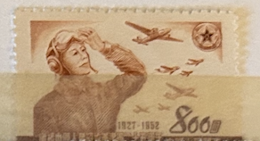
| SOURCE | TITLE| IMAGE MATCH | click to source page |
| Find Your Stamps Value | Value of 800 china 1927 1952 stamps | 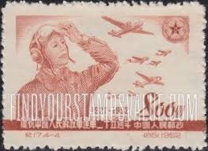 |
| HipStamp | China Stamp:1952,Sc#159-62 25th Anniv: People'S Liberation Army Cto-Nh SET | Asia - China, General Issue Stamp / HipStamp | 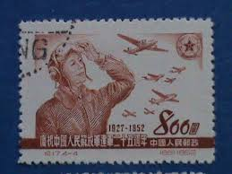 |
| Xabusiness.com | C17 Scott 159-162 25th Anniv. of Founding ofthe Chinese People's Liberation Army - China Stamps | 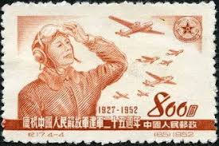 |
| Trakya Koleksiyon | RUSSIA 75 YEARS OF AIRPLANES PAPER MONY 14 PCS. SET FANTASY UNC - trakyakoleksiyon.com | 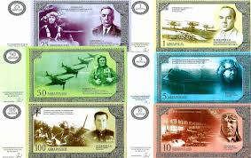 |
| eBay | Russia 1942-44 #860-66 Issued to Honour Soviet Heroes - Used Set of 11 | eBay | 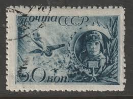 |
| stampsrussia.com | Stamps Russia 1942 : StampsRussia.com, Russian stamps at best prices! | 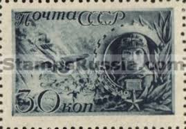 |
| Find Your Stamps Value | Value of nippon japan 24 international letter writing week stamps | 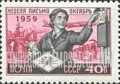 |
| eBay | Russian and Soviet Union Cover 1991-2000 Year of Issue Stamps for sale | eBay | 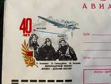 |
| Cherrystone Auctions | Rare Stamps & Postal History of the World - July 11-12, 2023 - RUSSIA | 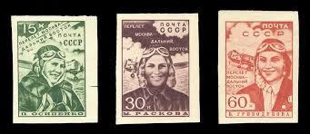 |
| eBay | Russia & Soviet Union Stamps for sale | eBay | 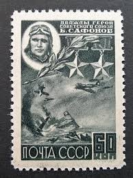 |
| Amazon.ca | Russia 2474 (Complete.Issue.) unmounted Mint/Never hinged ** MNH 2017 2. War - The Way to Victory (Stamps for Collectors) Military/Knight : Amazon.ca: Everything Else | 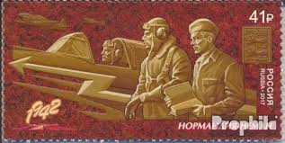 |
| eBay | RUSSIA 1333 MINT LIGHTLY HINGED OG * NO FAULTS VERY FINE! - RVS | eBay | 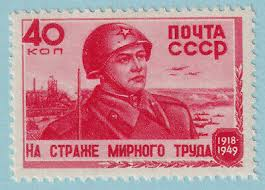 |
| eBay | Russia Red Army Soldier stamp 1949 RU1 | eBay | 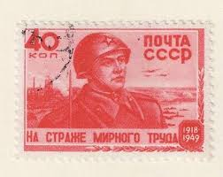 |
| stamprussia.com | Russian Used Stamps of 1941-1945. Online Catalogue. | 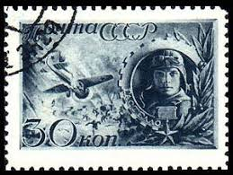 |
| Colnect | Stamp: Hero of USSR - Captain Nikolai Gastello (1907-1941) (Soviet Union, USSR(Heroes of the Great Patriotic War (Issue 1)) Mi:SU 833,Sn:SU 861,Yt:SU 854,Sg:SU 988,AFA:SU 848,Sol:SU 824,Un:SU 854,Zag:SU 731 📮 | 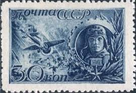 |
| Etsy | In 1942 Lieutenant Hero of the Soviet Union Timur Frunze. Collectible MNH Postage Stamp. Rare Find! Unused USSR Postage Stamp. (1960) - Etsy Australia | 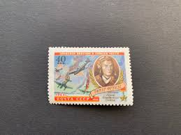 |
| eBay | Russia Scott 5905 -- 6312 Souvenir Sheets (1990-96) Mint NH VF, CV $21.00 C | eBay | 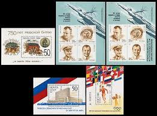 |
| Stamps СССР 1941 - Red army (URSS) - 23rd Anniversary of Red Army - Stamp: Aircraft Pilot | 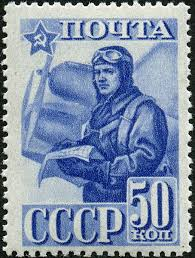 | |
| eBay | Russia C60,CTO. Mi 501. Rescue of Ice-breaker Chelyuskin crew,1935.A.Lapidevsky. | eBay | 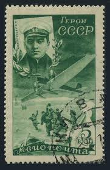 |
| stamprussia.com | Russian Used Stamps of 1941-1945. Online Catalogue. | 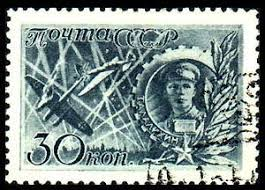 |
| eBay | RUSSIA,USSR:1939 SC#720 Used V. Grizodubova, Non-stop record flight from ARP1288 | eBay | 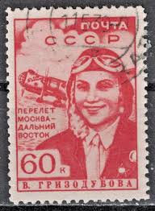 |
| eBay | N.Vietnam MNH Sc M 29 Mi PFM 33-34 Value $ 3.50 US $ Military Frank | eBay | 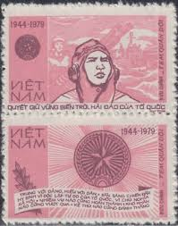 |
| eBay | RUSSIA 861A - Soviet Heroes "Captain Gastello" Ink Flaw (pa3376) | eBay | 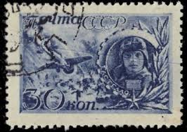 |
| eBay | Russia Scott 1333 (1949) Cancelled To Order F-VF, CV $10.00 W | eBay | 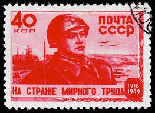 |
| eBay | Russian Military & War Postal Stamps for sale | eBay | 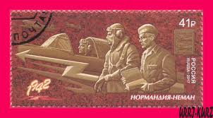 |
| eBay | Russia 1991 Space Scott# 5977c-d Mint Hinged | eBay | 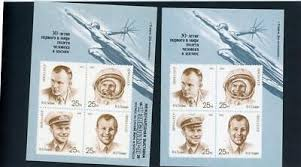 |
| FineScale Modeler | My other hobby volume I - Page 18 - FSM Ready Room - Finescale Modeler Forum | 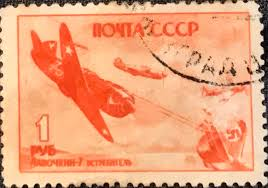 |
| PICRYL | 21 Stamps of the soviet union 1942 Images: PICRYL - Public Domain Media Search Engine Public Domain Search | 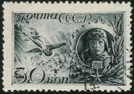 |
| eBay | Russia 1960 PLANES IN COMBAT, TIMUR FRUNZE MNH SC 2307 | eBay | 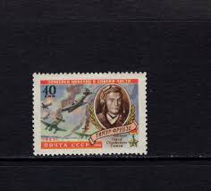 |
| Amazon.com | Amazon.com: Bulgaria 1517-1520 Block of Four, 1521 (Complete.Issue.) unmounted Mint/Never hinged ** MNH 1965 Space - Voskhod (Stamps for Collectors) Space : Toys & Games | 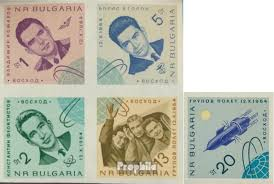 |
| eBay | 1979 VN Military Stamps Pair Pilot & Badge of People's Army Scott # M29 MNH | eBay | 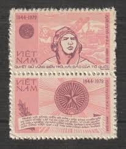 |
| eBay | RUSSIA.SCOTT # 830. PERF. 12 1/2 x 12. GUTTER PAIR. VERY RARE. USED. | eBay | 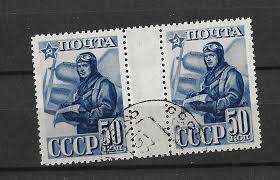 |
| Shutterstock | Ussr Circa 1942 Stamp Printed Ussr库存照片136330082 | Shutterstock | 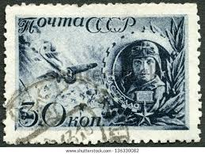 |
| eBay | Space Russian & Soviet Union 1991-2000 Year of Issue Stamps for sale | eBay | 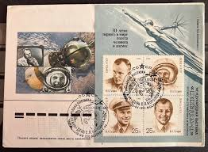 |
| Wikimedia.org | Category:1935 all stamps of the Soviet Union - Wikimedia Commons | 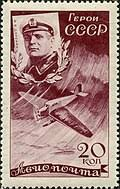 |
| eBay | s-l1200.png | 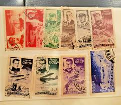 |
| eBay | ROMANIA 1323 - National Liberation "Soviet War Memorial" (pb54617) | eBay | 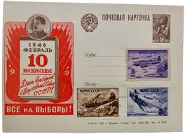 |
| philarz.net | Joint Stamp Issues | 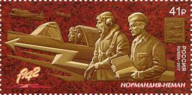 |
| JF-Stamps | German Occupations 1939/1945 (WW2) & Camps | JF Stamps Danmark | 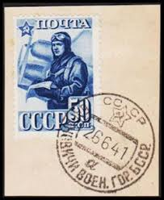 |
| eBay | BELARUS Sc 898 NH SOUVENIR SHEET OF 2014 - WORLD WAR II | eBay | 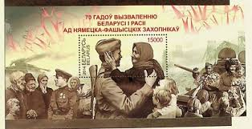 |
| Russian Philately | USSR 1923-1940 Stamps and Covers - Page 43 of 51 - Russian Philately - Russian Stamps | 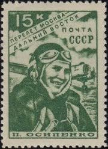 |
| Russian Philately | 1938 Stamps and Covers - Russian Philately - Russian Stamps | 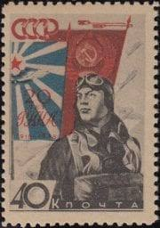 |
| eBay | SET OF 3 YURY GAGARIN FIRST USSR POSTAL STATIONERY | eBay | 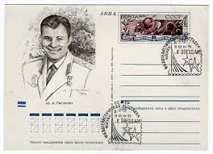 |
| eBay | Russia Stamps SC #951 MNH Soviet War Heroes Year 1944 Safonov COMBINED SHIPPING | eBay | 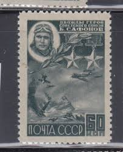 |
| eBay | RUSSIA, USSR, 1942, SC#861, Mi#860, Zag#731, MNH**, Block of 4, Gastello. | eBay | 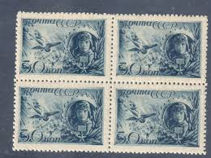 |
| eBay | 1984 Soviet letter cover 80 YEARS SINCE BIRTH OF PILOT V.P.CHKALOV | eBay | 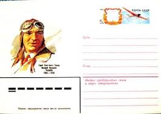 |
| eBay | RUSSIA. Promoting Interest in Aviation. 1951 Scott 1593x5 Canc. (BI#21) | eBay | 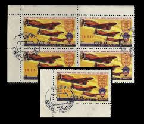 |
| brendanmanley.ca | Russia Stamps Russia 25 Different Stamps Collection - Variety Pack For Stamp Collectors & Enthusiasts Russia 25 Different Collector Stamps Philately | 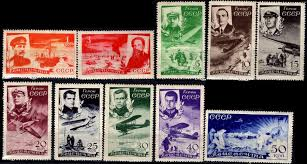 |
| Etsy | Envelope, 30 Years Since the First Man's Spacewalk, Unused, Space, Soviet Union Vintage Envelope, USSR, Unsigned, Illustration, 1991, 90s - Etsy Israel | 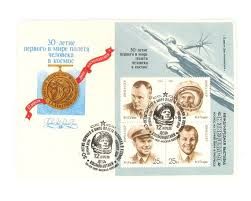 |
| eBay | Russia 1971 Post Card with original stamp #1 10th anniversary of 1st Space Fligh | eBay | |
| eBay | Russia 1949 #1333 Used Russian Soviet Army 31st Anniversary Block Set $40.00!! | eBay | |
| eBay | Russia USSR 1975 SC 4431 Z block 114 mint Souvenir Sheed . rtc4032 | eBay | |
| 123RF | 07.24.2019 Divnoe Stavropol Territory Russia USSR Postage Stamp 1981 N.N. Benardos 100th Anniversary Of The Invention Of Electric Welding In Russia Portrait On The Background Of Welding Stock Photo, Picture and Royalty | |
| HistoryForSale | Boris N Petrov - Stamp(S) Signed | HistoryForSale Item 354674 | |
| Shutterstock | Propaganda Soviet Union: Over 1,709 Royalty-Free Licensable Stock Photos | Shutterstock | |
| Amazon.ca | Russia 2306 (Complete.Issue.) unmounted Mint/Never hinged ** MNH 2016 Alexei Maressjew (Stamps for Collectors) Airplanes/Balloons/Zeppelins/Aviation : Amazon.ca: Everything Else | |
| eBay | USSR✔️Sc. 1246-7. Zverev 1219-20. Overprinted air set in bl of 4. MNHOG. CV$180+ | eBay | |
| eBay | Russia USSR 1959 Sc.#2237-38 MNH - People's Republic of China, 10th Anniv. | eBay | |
| eBay | Russia USSR 1960 SC 2307, 2322 used. rtc2798 | eBay | |
| Shutterstock | 10+ Hundred Gagarin Stamp Royalty-Free Images, Stock Photos & Pictures | Shutterstock |